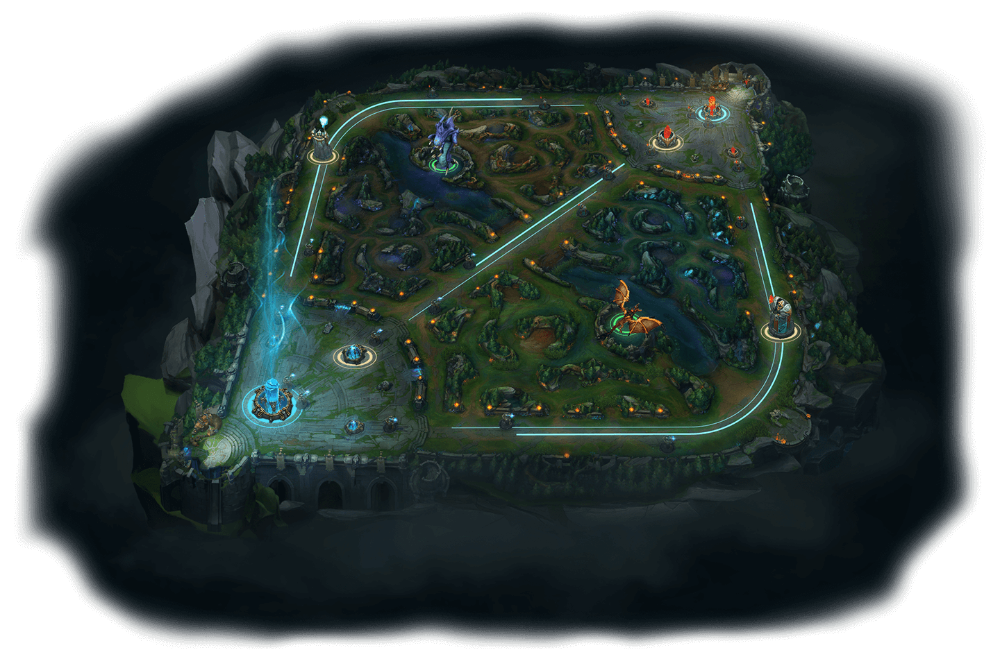
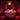
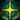

Introducción
League of Legends es un juego de estrategia por equipos en el que dos equipos de cinco campeones se enfrentan para ver quién destruye antes la base del otro. Elige de entre un elenco de 140 campeones para realizar jugadas épicas, asesinar rivales y derribar torretas para alzarte con la victoria.
League of Legends es uno de los juegos más populares de la historia y fue el que dio origen a las populares competiciones de deportes electrónicos. La historia de League of Legends comienza en 2009 de la mano de RIOT Games , cuando lanzó el juego para PC. LoL, siglas de League of Legends es un juego del género MOBA en el que la velocidad y las estrategias alcanzan ritmos frenéticos donde las decisiones se toman en cuestión de segundos.
League of Legends, en 2021 es el segundo juego más jugado en todo el mundo, por detrás de Fortnite, con un total de 8 millones de jugadores diarios en su plataforma. Esta fanbase es la que ha hecho que los Worlds de League of Legend sea el evento de e-sports más conocido en el mundo y, por ende, el evento con mayor repercusión de los deportes electrónicos.
La industria de los e-sports es la que tiene mayor proyección de futuro, de hecho grandes empresas internacionales como Sony o Coca-Cola pagan cantidades multimillonarias para aparecer como patrocinadores de los e-sports de grandes eventos por su visibilidad.
Así que ahora te vamos a contar un poco más sobre este multitudinario juego, los primeros pasos que cada jugador realiza para poder competir contra otros jugadores, un poco sobre las regiones que conforman Runaterra, el sistema de clasificación para poder definir el nivel de habilidad de cada jugador y sus modos de juego
Juego
En el juego, dos equipos de cinco jugadores luchan en un combate jugador contra jugador, cada equipo ocupando y defendiendo su mitad del mapa. Cada uno de los diez jugadores controla un personaje, conocido como "campeón", con habilidades únicas y diferentes estilos de juego. Durante una partida, los campeones se vuelven más poderosos acumulando puntos de experiencia y ganando oro que se emplea para la compra de artículos que potencian sus características y habilidades. En el modo principal de juego de LoL, "La Grieta del Invocador" , un equipo gana al abrirse paso hasta la base enemiga y destruir su "nexo", una gran estructura ubicada dentro de la cual se emanan tres líneas de súbditos o "minions", personajes no jugadores que al ser eliminados por el equipo enemigo otorgan oro y experiencia.
Inicio de la partida
Lo primero que se hace al comenzar la partida, una vez ya asignados los campeones, es elegir un carril de la Grieta del Invocador: superior, central o inferior. En cada uno de éstos, los personajes se encontrarán con tres torretas, las cuales provocan daño a los súbditos, que son criaturas que se generan automáticamente y acompañan a los campeones en la batalla. Entre los distintos carriles para llegar a la base enemiga se encuentra la jungla, lugar en el que residen monstruos y también están los Dragones. Éstos intentarán dañar a los campeones y dificultar llegar a la base enemiga, tanto para uno como para el otro equipo. Es por eso que además de enfrentarse al conjunto rival, y tratar de eliminarlo para poder avanzar en el mapa, se debe luchar contra monstruos y dragones. En caso de asesinar a alguno de éstos se obtendrán habilidades adicionales.
Objetivo

Cada carril se especializa en el uso de cierto tipo de campeones y roles. Los jugadores del carril superior son los luchadores más fuertes y que pelean en solitario. Su objetivo es proteger dicho carril y enfrentarse con los campeones más poderosos del equipo enemigo. El carril central es el de más batalla, tanto solo como en grupo, mientras que en lo que respecta al inferior el tirador, quien proporciona daño a distancia para el equipo necesita ser protegido desde el inicio por el soporte, que es el guardián, dado que suele ser poco resistente y es importante mantenerlo con vida antes de obtener oro y experiencia. Ganará quien logre sortear los obstáculos del camino y destruya el nexo rival.
-
DESTRUYE LA BASE
El nexo es el corazón de las bases de los equipos. Para ganar la partida, hay que destruir el nexo enemigo
TU NEXO
Los súbditos se generan en tu nexo. Detrás del nexo se encuentra la fuente, donde podrás recuperar vida y maná con rapidez y acceder a la tienda.
EL NEXO ENEMIGO
El nexo enemigo, que se encuentra en la base del equipo contrario, es igual que el de tu equipo. Si acabas con él, ganarás la partida.
-
ÁBRETE PASO
Para llegar hasta el nexo enemigo, tu equipo tendrá que avanzar por al menos una calle. Hay estructuras defensivas que bloquean tu avance: las torretas y los inhibidores. Cada calle cuenta con tres torretas y un inhibidor. Además, cada nexo tiene don torretas adicionales.
TORRETAS
Las torretas infligen daño a los súbditos y campeones enemigos, y ofrecen a su equipo un campo de visión limitado a través de la niebla de guerra. Ataca a estas estructuras con un grupo de súbditos delante, para que no te ataquen a ti, y sigue avanzando.
INHIBIDORES
Todos los inhibidores están protegidos por una torreta. Destruirlos hará que aparezcan supersúbditos de tu equipo en esa calle durante varios minutos. después de un tiempo, el inhibidor volverá a aparecer y se dejarán de generar supersúbditos
-

A LA CONQUISTA DE LA JUNGLA
Entre las calles se encuentra la jungla, en la que habitan monstruos neutrales y plantas mágicas. Los dos tipos de monstruos más importantes son el Barón Nashor y los dragones. Acabar con estas unidades otorgará a tu equipo mejoras únicas y, en ocasiones, te ayudará a darle la vuelta a la partida.
BARÓN NASHOR
El Barón Nashor es el monstruo más poderoso de toda la jungla. Asesinar al Barón otorga a tu equipo daño de ataque y poder de habilidad adicionales, una versión mejorada de Retirada y potencia significativamente a los súbditos que se encuentren cerca de un campeón con la mejora activa.
DRAGONES
Los dragones son monstruos muy poderosos que otorgan mejoras únicas en función del elemento al que pertenezcan. Hay cinco dragones elementales y un Dragón anciano.
-
ELIGE UNA CALLE
La composición de equipo más recomendada está integrada por cinco posiciones diferentes. Las características de cada una de las calles favorecen a ciertos tipos de campeones y roles. ¡Pruébalas todas o elige la que más te guste!
CALLE SUPERIOR
Los campeones de la calle superior son los luchadores solitarios por excelencia. Su trabajo es proteger su calle y centrarse en eliminar a las mayores amenazas del equipo enemigo.
JUNGLA
Los junglas dedican su partida a la caza. Se sirven de su destreza y sigilo para saltar de una calle a otra, se encargan de vigilar los monstruos neutrales más importantes y atacan en el momento preciso cuando un enemigo baja la guardia.
CALLE CENTRAL
Los campeones de la calle central cuentan con un gran daño explosivo y funcionan muy bien tanto de forma independiente como en equipo. Para ellos, el combate es una peligrosa danza que consiste en encontrar el momento idóneo para acabar con su rival.
CALLE INFERIOR
Los campeones de la calle inferior son la dinamita del equipo. Hay que protegerlos al comienzo de la partida para asegurarse de que consiguen suficiente oro y experiencia para llevar al equipo a la victoria.
APOYO
Los campeones de apoyo son los protectores del equipo. Mantienen con vida a sus aliados y se centran en que consigan asesinatos, así como en proteger a su compañero de la calle inferior hasta que se vuelva más fuerte.
Mejora a tu campeón
A medida que avanza la partida, los campeones se vuelven más fuertes al conseguir experiencia para subir de nivel y oro para comprar objetos más poderosos. Estos dos factores son esenciales para superar al equipo enemigo y destruir su base.
-

CONSIGUE EXPERIENCIA
Cuando los campeones consiguen una cantidad determinada de experiencia suben de nivel, lo que les permite desbloquear o mejorar sus habilidades y aumenta sus estadísticas básicas. Asesina a unidades y campeones enemigos, asiste a tus compañeros en asesitanos y destruye estructuras defensivas para conseguir experiencia.
-

CONSIGUE ORO
El oro es la divisa del juego, que te permite comprar objetos para tu campeón. Asesina a unidades y campeones enemigos, asiste a tus compañeros en asesinatos, destruye estructuras defensivas y hazte con objetos que lo generen para conseguir oro.
-

TIENDA
En la tienda puedes comprar y vender objetos con el oro que hayas conseguido. Solo se puede acceder a ella desde la fuente.
Torneos y competiciones
En lo que respecta a las competiciones, la Liga Master Flow, más conocida como LVPArg, es la más importante de Argentina. Consagrarse campeón en este torneo permite acceder a la Liga Latinoamericana: la competencia máxima de la región. La edición 2021 de LVPArg contó con más de 1.3 millones de espectadores en el canal oficial de la organización. En la edición 2022, el ganador recibirá 500 mil pesos mientras que el subcampeón se quedará con 280 mil. A nivel mundial los torneos de mayor importancia son los Worlds, campeonatos que reúnen a los 16 mejores equipos del mundo y entregan cerca de un millón de dólares en premios. El del año pasado, desembolsó 489 mil dólares para el primero y 333 mil para el segundo puesto. A lo largo de los más de diez años de trayectoria, Riot Games repartió más de 85 millones de dólares.
Regiones
AGUASTURBIAS
Situada en la lejanía, en el archipiélago de las Islas de la Llama Azul, Aguasturbias es una ciudad portuaria como ninguna otra: hogar de cazadores de serpientes, pandillas de muelle y contrabandistas de todo el mundo conocido. En este lugar se hacen fortunas y las ambiciones se destruyen en un abrir y cerrar de ojos. Para aquellos que huyen de la justicia, de las deudas o de los persecutores, Aguasturbias puede ser un lugar de nuevos comienzos, ya que en estas calles retorcidas a nadie le interesa tu pasado. Pese a ello, en cada nuevo amanecer, siempre se pueden encontrar viajeros imprudentes flotando en el puerto, con las bolsas vacías y la garganta cortada...
Si bien puede ser extremadamente peligrosa, en Aguasturbias abundan las oportunidades exentas de las ataduras de un gobierno oficial y de un reglamento del comercio. Si tienes el dinero, puedes comprar casi cualquier cosa: desde Hextech ilegal hasta los servicios de los criminales locales.
Con el reciente derrocamiento del último ''rey saqueador'' de Aguasturbias, la ciudad atraviesa un periodo de transición en el que los capitanes más prominentes tratan de llegar a un acuerdo para definir su futuro. No obstante, mientras haya embarcaciones en buen estado y tripulaciones dispuestas a navegar en ellas, es probable que siga siendo uno de los lugares más coloridos y mejor conectados en Runaterra.
CIUDAD DE BANDLE
Hay discrepancias con respecto al sitio exacto en el que se encuentra el hogar de los yordles; no obstante, algunos mortales afirman haber viajado a través de rutas invisibles hacia una tierra de curiosos encantos más allá del reino material. Hablan de un sitio mágico sin restricciones en el que los insensatos son llevados por el mal camino de las mil maravillas y terminan perdidos en un sueño.
En la Ciudad de Bandle, se dice que todas las sensaciones se intensifican para quienes no son yordles. Los colores son más brillantes, los alimentos y las bebidas intoxican los sentidos durante años y, una vez que se prueban, son imposibles de olvidar. La luz del sol es eternamente dorada, las aguas son cristalinas y cada cosecha trae consigo una recompensa provechosa. Quizás algunas de estas afirmaciones sean verdad, o tal vez ninguna lo sea, los cuentacuentos jamás parecen ponerse de acuerdo sobre lo que verdaderamente vieron.
Lo único que se sabe con certeza es que el tiempo no pasa por la Ciudad de Bandle y sus habitantes. Esto podría explicar por qué aquellos mortales que logran regresar parecen haber envejecido considerablemente, mientras que muchos otros nunca vuelven a ser vistos.
DEMACIA
Al pertenecer a un reino poderoso y aferrado a la ley con una prestigiosa historia militar, los habitantes de Demacia valoran ante todo los ideales de justicia, de honor y del deber, al tiempo que se enorgullecen acérrimamente de su herencia cultural. Pero, a pesar de sus principios nobles, esta gran nación autónoma se ha vuelto cada vez más insular y aislacionista durante los últimos siglos.
Ahora, Demacia es un reino sumido en el caos.
Su capital, la gran ciudad de Demacia, fue fundada como un refugio frente a la hechicería tras la pesadilla de las Guerras Rúnicas, y construida a partir del enigma de la petricita, una peculiar roca blanca que disminuye la energía mágica. Es desde aquí que la familia real ha velado por la defensa de las aldeas y pueblos cercanos, las tierras de cultivo, los bosques y las montañas ricas en recursos minerales.
No obstante, tras la repentina muerte del rey Jarvan III, el resto de las familias nobles no ha aprobado aún la sucesión al trono de su único heredero, el joven príncipe Jarvan.
Quienes viven más allá de las fronteras sumamente resguardadas son vistos cada vez más con sospecha, mientras que varios antiguos aliados comenzaron a recurrir a otros en busca de protección en medio de estos tiempos inciertos. Algunos se atreven a murmurar que la edad de oro de Demacia ya pasó y, a menos que sus habitantes estén dispuestos a adaptarse al mundo cambiante (algo de lo que algunos no se creen capaces), el declive del reino parece inevitable.
Ni toda la petricita en su territorio podrá proteger a Demacia de sí misma.
EL FRÉLJORD
El Fréljord es un lugar duro y despiadado en donde sus habitantes nacen siendo guerreros y tendrán que prosperar contra todo pronóstico.
Orgullosas y poseedoras de una independencia feroz, las tribus del Fréljord son consideradas salvajes, ásperas y ''bárbaras'' por sus vecinos a lo largo de Valoran, quienes desconocen las tradiciones antiguas que las forjaron. Varios miles de años atrás, la alianza entre las hermanas Avarosa, Serylda y Lissandra se quebró en una guerra que, sin saberlo, amenazó a toda Runaterra al sumir en caos y en un invierno casi permanente a las tierras del norte. Ahora, solo aquellos mortales verdaderamente excepcionales, inmunes a los estragos del fuego y del viento, son quienes aparentan estar destinados a liderar.
A pesar de los grandes esfuerzos de la Guardia de Hielo, aún perduran los mitos y las leyendas de los dioses antiguos, los yetis enigmáticos y los chamanes cambiapieles. Los invasores de la Garra Invernal abarcan más territorios con cada año que pasa, hostigando las fronteras de Demacia al sur y las de Noxus al este. Por su parte, algunas tribus y clanes desobedientes e independientes que buscan un futuro más pacífico han comenzado a aliarse con Ashe, la joven reina de los avarosanos.
A pesar de ello, los presagios son desalentadores. Sin lugar a dudas, la guerra regresará al Fréljord y nadie podrá escapar.
EL VACÍO
Comenzando a gritos su existencia junto al nacimiento del universo, el Vacío es una manifestación de la nada inasible que se encuentra más allá. Es una fuerza con un hambre insaciable, esperando a través de los eones hasta que sus amos, los misteriosos Vigilantes, marquen la hora final.
Ser un mortal tocado por este poder significa sufrir un atisbo agonizante de eterna irrealidad, suficiente como para quebrar hasta la mente más fuerte. Los habitantes del Vacío son criaturas construidas, usualmente con una conciencia limitada, pero programadas con un propósito singular: desatar el olvido total por toda Runaterra.
ISLAS DE LA SOMBRAS
Esta tierra condenada alguna vez fue el hogar de una civilización noble e iluminada, conocida por sus aliados y emisarios como las Islas Bendecidas. Sin embargo, hace más de mil años, un cataclismo mágico sin precedentes destrozó la barrera entre los reinos material y espiritual, combinándolos en uno solo que condenó instantáneamente a todos los seres vivos.
Ahora, una malévola Niebla Negra cubre permanentemente las islas, mientras que la tierra misma está contaminada por la hechicería oscura. Los mortales que se atreven a aventurarse a sus lúgubres costas son despojados lentamente de su fuerza vital, lo cual, a su vez, atrae a los insaciables e implacables espíritus de los muertos.
Quienes mueren dentro de la Niebla están condenados a asediar este lugar de pesadilla por toda la eternidad. Peor aún, el poder de las Islas de la Sombra se fortalece con cada año que pasa y los espectros más poderosos pueden alejarse cada vez más de las islas y rondar por toda Runaterra.
IXTAL
Conocida por su maestría en magia elemental, Ixtal fue una de las primeras naciones independientes en unirse al imperio shurimano . En realidad, la cultura ixtali es mucho más antigua: formó parte de la gran diáspora hacia occidente que dio origen a civilizaciones como los Buhru, la magnífica Helia y los ascetas de Targón. Incluso, es muy probable que haya tenido una participación clave en la creación de los primeros Ascendidos.
Pero los magos de Ixtal sobrevivieron al Vacío y después a los Darkin, gracias a que se distanciaron de sus vecinos, interponiendo como escudo la naturaleza que los rodeaba. A pesar de que se perdió una gran parte, estaban comprometidos con la preservación de lo poco que quedaba.
Ahora, tras miles de años de reclusión en las profundidades de la selva, la sofisticada ciudad de arcología, Ixaocan, permanece casi intacta frente a la influencia externa. Después de haber presenciado, desde la distancia, la destrucción de las Islas Bendecidas, así como las subsecuentes Guerras Rúnicas, los ixtali ven al resto de las facciones de Runaterra como advenedizas y farsantes, por lo que utilizan su poderosa magia para mantener a los intrusos a distancia.
JONIA
Rodeada por mares traicioneros, Jonia se compone de una serie de provincias aliadas repartidas por un gran archipiélago conocido por muchos como las Tierras Originarias. La búsqueda del equilibrio entre todas las cosas es lo que ha moldeado a la cultura jonia, por lo que el límite entre los reinos de lo material y lo espiritual suele ser más permeable ahí, en especial en los bosques silvestres y en las montañas.
Si bien los encantos de estas tierras pueden ser veleidosos, dada la naturaleza peligrosa y mágica de su fauna, la mayor parte de los jonios tuvo una vida próspera durante varios siglos. Los monasterios de los guerreros, las milicias provinciales e incluso Jonia misma habían bastado para protegerlos.
Pero eso terminó hace doce años, cuando Noxus atacó las Tierras Originarias. Las aparentemente infinitas huestes del imperio arrasaron con Jonia y tuvieron que pasar muchos años para que cayeran derrotadas, a un costo muy alto.
Ahora, Jonia existe en una paz inquieta. Las diferentes reacciones frente a la guerra dividieron la región. Algunos grupos, como los monjes Shojin o los Kinkou, buscan volver a la paz que conlleva el aislamiento y a las tradiciones pastoriles. Otras facciones más radicales, como la Hermandad Navori y la Orden de la Sombra, exigen la militarización de la magia de la tierra para crear una nación unificada que pueda vengarse de Noxus.
El destino de Jonia pende de un delicado equilibrio que muy pocos están dispuestos a alterar, pero que todos pueden sentir cómo se mueve inquietamente bajo sus pies.
NOXUS
Noxus es un imperio poderoso con una reputación aterradora. Para quienes viven más allá de sus fronteras, es brutal, expansionista y amenazante. Sin embargo, para aquellos que logran ver más allá de su exterior bélico, se encuentran con una sociedad inusualmente inclusiva que respeta y cultiva las fortalezas y los talentos de los suyos.
Los Noxii fueron en el pasado feroces tribus barbáricas hasta que invadieron la antigua ciudad que ahora se encuentra en el corazón de su dominio. Amenazados por todos los flancos, pelearon encarnizadamente contra sus enemigos y expandieron sus fronteras año tras año. Esta lucha por la supervivencia moldeó la identidad de los noxianos modernos: gente profundamente orgullosa que valora la fuerza sobre todas las cosas, aunque esta puede manifestarse de diferentes maneras.
Cualquiera puede ascender a una posición de poder y respeto en Noxus si presenta la aptitud necesaria, más allá de su estrato social, antecedentes o riqueza. Aquellos que son capaces de ejercer la magia son tenidos en alta estima y son buscados con ahínco, con la intención de perfeccionar y aprovechar sus talentos al máximo en beneficio del imperio.
A pesar de este ideal meritocrático, las antiguas familias nobles aún ostentan un poder considerable y algunos temen que la mayor amenaza para Noxus no provenga de sus enemigos, sino desde dentro.
PILTÓVER
Piltóver es una ciudad próspera y progresista cuyo poder e influencia van en ascenso. Es el centro cultural de Valoran, donde el arte, la producción artesanal, el comercio y la innovación van de la mano. Su poder no viene del poder militar, sino de los motores del comercio y las ideas avanzadas. Ubicada en los acantilados sobre el distrito de Zaun y con vista al océano, flotas de barcos pasan por sus titánicas compuertas con artículos de todas partes del mundo. La riqueza que esto genera ha dado lugar a un crecimiento de la ciudad sin prececedentes. Piltóver se ha reinventado como una ciudad donde se pueden amasar enormes fortunas y hacer realidad los sueños. Pujantes clanes de mercaderes pudieron desarrollarse en las actividades más increíbles: imponentes disparates artísticos, arcanas investigaciones sobre hextech y monumentos arquitectónicos enalteciendo su poder. Con una creciente cantidad de inventores en el emergente conocimiento de hextech, Piltóver se convirtió en un imán para los artesanos más habilidosos del mundo.
SHURIMA
El imperio de Shurima fue alguna vez una civilización floreciente que abarcó un continente entero. Forjada, en una era ya olvidada, por los poderosos dioses guerreros de los Huéspedes Ascendidos, unificó a todos los pueblos discrepantes del sur e impuso una paz duradera entre ellos.
Pocos se atrevían a rebelarse. Y quienes lo hicieron, como la condenada nación de Icathia, fueron aplastados sin piedad.
Sin embargo, después de varios miles de años de crecimiento y prosperidad, la ascensión fallida del último emperador shurimano redujo la capital a ruinas y las historias de la antigua gloria del imperio se convirtieron en mitos. Ahora, la mayor parte de los habitantes nómadas de los desiertos de Shurima trata de sostener su endeble existencia valiéndose de la tierra despiadada. Algunos construyeron pequeños puestos de avanzada para defender los pocos oasis disponibles, mientras que otros hurgan en catacumbas desaparecidas hace mucho tiempo, en busca de las incontables riquezas que, seguramente, yacen enterradas ahí. También están aquellos que viven como mercenarios, quienes cobran por sus servicios antes de desaparecer en los páramos sin ley.
Pese a ello, unos cuantos se atreven a soñar con el retorno de las viejas costumbres. De hecho, recientemente las tribus fueron alertadas por los susurros del corazón del desierto, los cuales afirman que el emperador Azir ha vuelto para guiarlos en una era nueva y maravillosa.
TARGÓN
El Monte Targón es la cima más poderosa de Runaterra, una montaña imponente de roca calcinada por el sol en medio de una cordillera de cumbres de escala incomparable en el mundo. El Monte Targón, ubicado lejos de la civilización, es totalmente remoto y su cúspide casi imposible, excepto para el explorador más resuelto. Como todo lugar mitológico, el Monte Targón es faro de soñadores, locos y aventureros. Algunos de estos valientes intentan escalar la montaña inalcanzable, tal vez en busca de sabiduría o iluminación, o por perseguir la gloria o quizá motivados por un anhelo profundo de pisar su cumbre. El ascenso es prácticamente irrealizable, y aquellos pocos que de alguna manera logran sobrevivir para llegar a su cima, casi nunca hablan de lo que vieron. Algunos vuelven con una mirada poseída y vacía, otros cambiados al punto de ser irreconocibles, imbuidos por un Aspecto de poder inhumano y sobrenatural, con un destino que pocos mortales comprenderían.
ZAUN
Zaun es un gran distrito suburbano ubicado en la profundidad de los cañones y valles que rodean Piltóver. La poca luz que llega allí abajo se filtra por los vapores que salen de las tuberías corroídas y se refleja a través de los vitrales de la arquitectura industrial. Zaun y Piltóver estuvieron alguna vez unidas; ahora son sociedades separadas, pero simbióticas. A pesar de existir sumida en una permanente luz crepuscular, Zaun progresa, su gente es enérgica y su cultura es rica. La riqueza de Piltóver le permitió a Zaun desarrollarse a la par; un espejo oscuro de la ciudad de arriba. Muchos de los artículos que ingresan a Piltóver encuentran la manera de entrar al mercado negro de Zaun, al igual que las peligrosas investigaciones de los inventores hextech, que se topan con demasiadas restricciones en la ciudad encumbrada, muchas veces son bien recibidas en Zaun. El ilimitado desarrollo de tecnologías volátiles e industrias imprudentes corrompieron y pervirtieron grandes áreas de Zaun. Cantidades de desperdicios tóxicos quedan estancados en las partes más bajas de la ciudad, pero aún allí la gente encuentra la manera de existir y prosperar.
Sistema de clasificación
Divisiones
League of Legends tiene un sistema de clasificación llamado sistema de liga, que empareja a jugadores con un nivel de habilidad similar para jugar entre ellos y contra ellos. Consta de nueve niveles que indican el nivel de habilidad de los jugadores. Los jugadores de cada división se clasifican mediante un sistema de puntos llamado League Points (LP) .
Los jugadores pueden controlar la clasificación de su liga en su perfil.
Puntos de liga
El jugador gana Puntos de Liga (LP) cuando gana juegos clasificatorios y los pierde cuando pierde juegos clasificatorios. La cantidad ganada o perdida depende de la Clasificación de Match Making (MMR) oculta del jugador. Cuanto mayor sea el MMR, más LP ganará por victoria y menos LP perderá por pérdida.
Niveles y divisiones
Cada nivel de Hierro a Diamante está dividido en cuatro divisiones, representadas por un Tecla - W comenzando desde IV (siendo 4 el más bajo) hasta I (Siendo 1 el más alto). Cada división presenta una armadura base, que luego se actualiza en función de las divisiones, lo que da como resultado muchas combinaciones diferentes. Las armaduras que se muestran a continuación están en orden: división 4 base; división 3 nivel 1; división 2 nivel 2; división 1 nivel 3.
Los niveles Maestro y superiores no tienen divisiones, sino que dependen exclusivamente de LP y de la población de jugadores dentro de estos niveles de rango, conocidos como niveles Apex. Cualquier característica de armadura clasificatoria se obtiene permaneciendo dentro de estos niveles para cada división de la temporada.
Modos de Juego
Modo de juego temporalson modos de juego separados mecánicamente League of Legends disponibles a través de la navegación a través de la cola Modo de juego rotativo Cada uno de los modos tiene desafíos y giros únicos a los modos de juego permanentes. Estos modos se presentan durante eventos normales y estacionales o espaciados a lo largo del año.
Temporales
- Ascensión
- Luchadores del Mercado negro
- Estrella Negra
- Definitivamente no es el Dominion
-  Bots Malditos de la muestran
- Hexakill
- Caza de la luna de sangre
-
 Invasión
Invasión
-
 Leyenda del Rey Poro
Leyenda del Rey Poro
- Némesis
- Frenesí en el Nexo
- Asedio al Nexo
-  Odisea: Extracción
- Uno Para Todos
- SOBRECARGA
- Snowdown Showdown
- Ultra Rápido y Feroz
Permanentes
- Clásico
- Grieta del Invocador
- Puente del Asesinato
- El Bosque Retorcido